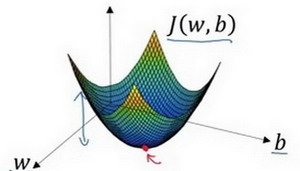
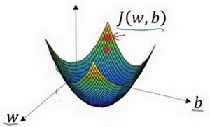
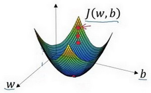
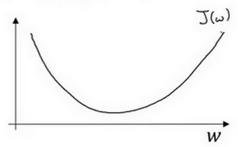
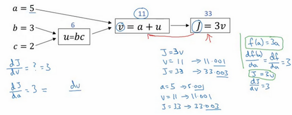
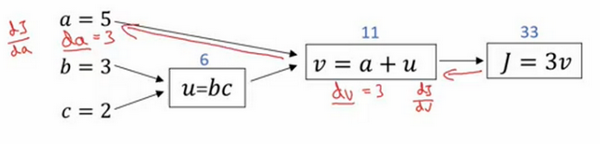
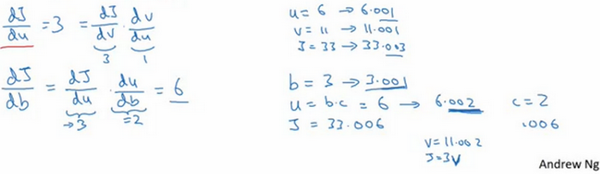

神经网络基础
Table of Contents
当实现一个神经网络的时候，需要知道一些非常重要的技术和技巧
例如有一个包含m个样本的训练集，很可能习惯于用一个for循环来遍历训练集中的每个样本 但是当实现一个神经网络的时候，通常不直接使用for循环来遍历整个训练集
在神经网络的计算中，通常先有一个叫做 前向暂停 forward pause 或叫做 前向传播 foward propagation 的步骤，接着有一个叫做 反向暂停 backward pause 或叫做 反向传播 backward propagation 的步骤
也会介绍为什么神经网络的训练过程可以分为前向传播和反向传播两个独立的部分
接下来将使用 逻辑回归 logistic regression 来传达这些想法，以使能够更加容易地理解这些概念
二分类
逻辑回归是一个用于 二分类 binary classification 的算法
首先从一个问题开始说起，这里有一个二分类问题的例子 假如有一张图片作为输入，比如这只猫，如果识别这张图片为猫，则输出标签1作为结果 如果识别出不是猫，那么输出标签0作为结果
现在可以用字母 \(y\) 来表示输出的结果标签，如下图所示：

接下来来看看一张图片在计算机中是如何表示的，为了保存一张图片，需要保存三个矩阵，它们分别对应图片中的红、绿、蓝三种颜色通道，如果图片大小为64x64像素，那么你就有三个规模为64x64的矩阵，分别对应图片中红、绿、蓝三种像素的强度值。为了便于表示，这里画了三个很小的矩阵，注意它们的规模为5x4 而不是64x64，如下图所示：

为了把这些像素值放到一个特征向量中，需要把这些像素值提取出来，然后放入一个特征向量 \(x\)
为了把这些像素值转换为特征向量 ，需要像下面这样定义一个特征向量 x 来表示这张图片 把所有的像素都取出来，例如255、231等等，直到取完所有的红色像素 接着最后是255、134、…、255、134等等 直到得到一个特征向量，把图片中所有的红、绿、蓝像素值都列出来 如果图片的大小为64x64像素，那么向量 x 的总维度，将是64 * 64 * 3，这是三个像素矩阵中像素的总量。在这个例子中结果为12,288
现在用 \(n_x = 12288\) 来表示输入特征向量的维度，有时候为了简洁，会直接用小写的n来表示输入特征向量的x维度。所以在二分类问题中，目标就是获得一个分类器，它以图片的特征向量作为输入，然后预测输出结果为1还是0，也就是预测图片中是否有猫：

符号定义
- \(x\) : 表示一个 \(n_x\) 维数据，为输入数据，维度为 \((n_x, 1)\)
- \(y\) : 表示输出结果，取值为 \((0, 1)\)
- \((x^{(i)}, y^{(i)})\) : 表示第 \(i\) 组数据，可能是训练数据，也可能是测试数据，此处默认为训练数据
- \(\mathbf{X} = [x^{(1)}, x^{(2)}, \ldots, x^{(m)}]\) : 表示所有的训练数据集的输入值，放在一个 \(n_x \times m\) 的矩阵中，其中 \(m\) 表示样本数目
- \(\mathbf{Y} = [y^{(1)}, y^{(2)}, \dots, y^{(m)}]\) : 对应表示所有训练数据集的输出值，维度为 \(1 \times m\)
用一对 \((x, y)\) 来表示一个单独的样本，\(x\) 代表 \(n_x\) 维的特征向量， \(y\) 表示标签(输出结果)只能为0或1。 而训练集将由 \(m\) 个训练样本组成：
- 其中 \((x^{(1)}, y^{(1)})\) 表示第一个样本的输入和输出
- \((x^{(2)}, y^{(2)})\) 表示第二个样本的输入和输出
- 直到最后一个样本 \((x^{(m)}, y^{(m)})\)
所有的这些一起表示整个训练集：
- 有时候为了强调这是训练样本的个数，会写作 \(\mathbf{M}_{train}\)
- 当涉及到测试集的时候，会使用 \(\mathbf{M}_{test}\) 来表示测试集的样本数，所以这是测试集的样本数

最后为了能把训练集表示得更紧凑一点，会定义一个矩阵用大写 \(\mathbf{X}\) 的表示，它由输入向量 \(x^{(1)}\) , \(x^{(2)}\) 等组成，如下图放在矩阵的列中，所以现在 \(x^{(1)}\) 把作为第一列放在矩阵中， \(x^{(2)}\) 作为第二列，\(x^{(m)}\) 放到第 \(m\) 列，然后就得到了 训练集矩阵 。所以这个矩阵有 \(m\) 列，是训练集的 样本数量 ，然后这个矩阵的高度记为 \(n_{x}\) ，注意有时候可能因为其他某些原因，矩阵 \(\mathbf{X}\) 会由训练样本按照行堆叠起来而不是列，\(x^{(1)}\) 的转置直到 \(x^{(m)}\) 的转置，但是在实现神经网络的时候，使用左边的这种形式，会让整个实现的过程变得更加简单：

python 表示
\(\mathbf{X}\) 是一个规模 \(n_{x}\) 为乘以 \(m\) 的矩阵，当用Python实现的时候，会看到 X.shape()
这是一条Python命令，用于显示矩阵的规模
即 X.shape 等于 \((n_x, m)\)，\(\mathbf{X}\) 是一个规模为 \(n_x\) 乘以 \(m\) 的矩阵
综上所述，这就是如何将训练样本（输入向量的集合）表示为一个矩阵
那么输出标签呢？同样的道理，为了能更加容易地实现一个神经网络，将标签 \(y\) 放在列中将会使得后续计算非常方便，所以定义大写的 \(\mathbf{Y}\) 等于 \(y^{(1)}, y^{(2)}, \ldots, y^{(m)}\) ，所以在这里是一个规模为1乘以 \(m\) 的矩阵，同样地用Python将表示为 Y.shape 等于，表示这是一个规模为1乘以 \(m\) 的矩阵

实现神经网络的时候会发现，一个好的符号约定能够将不同训练样本的数据很好地组织起来 这里所说的数据不仅包括 x 或者 y 还包括之后会看到的其他的量 将不同的训练样本的数据提取出来，然后就像刚刚对 x 或者 y 所做的那样，将他们堆叠在矩阵的列中，形成之后会在逻辑回归和神经网络上要用到的符号表示
逻辑回归
接下来将介绍 逻辑回归 的 Hypothesis Function （假设函数）
对于二元分类问题来讲，给定一个输入特征向量 \(\mathbf{X}\) ，它可能对应一张图片。如果想知道这张图片是否是一只猫或者不是一只猫的图片，就需要一个算法能够输出预测，这被称之为 \(\hat{y}\)，也就是对实际值 \(y\) 的估计。更正式地来说，想让 \(\hat{y}\) 表示 \(y\) 等于1的可能性或者是机会，前提条件是给定了输入特征 \(\mathbf{X}\) 。换句话来说，如果 \(\mathbf{X}\) 是一张图片，想让 \(\hat{y}\) 来告诉这是一只猫的图片的机率有多大。\(\mathbf{X}\) 是一个 \(n_{x}\) 维的向量（相当于有 \(n_{x}\) 个特征的特征向量），现在用 \(w\) 来表示 逻辑回归的参数 ，这也是一个 \(n_{x}\) 维向量（因为实际上是 特征权重 ，维度与特征向量相同），参数里面还有 \(b\) ，这是一个实数（表示 偏差 ）。在给出了输入 \(x\) 以及参数 \(w\) 和 \(b\) 之后, 可以尝试让 \(\hat{y} = w^{T}x + b\) 来计算 \(\hat{y}\) :

这时候得到的是一个关于输入 \(x\) 的线性函数，实际上这是在做线性回归时所用到的，但是这对于二元分类问题来讲并不准确，因为想让 \(\hat{y}\) 表示实际值 \(y\) 等于1的机率的话， \(\hat{y}\) 应该在0到1之间。这是一个需要解决的问题，因为 \(w^{T}x + b\) 可能比1要大得多，或者甚至为一个负值。对于想要的在0和1之间的概率来说它是没有意义的，因此在逻辑回归中，输出应该是等于由上面得到的线性函数式作为自变量的 sigmoid函数 中，公式如上图最下面所示，将线性函数转换为非线性函数
Sigmoid函数
下图是 \mathbf{sigmoid}函数的图像，如果把水平轴作为 \(z\) 轴，那么关于的sigmoid函数是平滑地从0走向1（纵轴），曲线与纵轴相交的截距是 0.5 ，这就是 \(z\) 关于的 \mathbf{sigmoid}函数的图像。通常都使用 \(z\) 来表示 \(w^{T}x + b\) 的值

\(\mathbf{sigmoid}\) 函数的公式： \(\sigma(z) = \frac{1}{1 + e^{-z}}\) , \(z\) 在这里是一个实数
这里要说明一些值得注意的事情：
- 如果 \(z\) 非常大，那么 \(e^{-z}\) 将会接近于0，而 \(\mathbf{sigmoid}\) 函数将会非常接近 1
- 相反地，如果 \(z\) 非常小或者说是一个绝对值很大的负数，那么关于 \(e^{-z}\) 这项会变成一个很大的数，所以这个就接近于 0
因此当实现逻辑回归时，让机器学习参数应用这个函数使得成为对概率的一个很好的估计
符号惯例
这里介绍一种符号惯例，可以让参数 \(w\) 和参数 \(b\) 分开，而参数 \(b\) 对应的是一种偏置

比如在某些例子里，定义一个额外的特征称之为 \(x_0\)，并且使它等于1，那么现在 \(\mathbf{X}\) 就是一个 \(n_x\) 加1维的变量，然后定义 \(\hat{y} = \sigma(\theta^{T} x)\) 的 \(\mathbf{sigmoid}\) 函数
在这个备选的符号惯例里，有一个参数向量 \(\theta_0, \theta_1, \ldots, \theta_{n_x}\) ，这样 \(\theta_0\) 就充当了 \(b\) ，这是一个实数，而剩下的 \(\theta_1\) 直到 \(\theta_{n_x}\) 充当了 \(w\)
结果就是当实现神经网络时，有一个比较简单的方法是保持 b和 w分开 现在已经知道逻辑回归模型是什么样子了，下一步要做的是训练参数和参数 以及如何 定义一个代价函数
代价函数
为了训练逻辑回归模型的参数 \(w\) 和参数 \(b\) ，需要一个代价函数。先看一下逻辑回归的输出函数：
\begin{aligned} \hat{y} = \sigma(w^{T}x + b), \textrm{where} \quad \sigma(z) = \frac{1}{1 + e^{-z}} \\ \textrm{Given} \quad \{(x^{(1)}, y^{(1)}), \ldots , (x^{(m)}, y^{(m)})\}, \textrm{want} \quad \hat{y}^{(i)} \approx y^{(i)} \end{aligned}为了让模型通过学习调整参数，需要给予一个样本 \(m\) 的训练集，这会让你在训练集上找到参数 \(w\) 和参数 \(b\),，来得到你的输出函数
对训练集的预测值，将它写成 \(\hat{y}\)，当然希望它会接近于训练集中的 \(y\) 值。需要说明上面的定义是对 一个训练样本 来说的，这种形式也使用于 每个 训练样本，使用这些 带有圆括号的上标 来区分 索引 和 样本 ：
- 训练样本 \(i\) 所对应的预测值是 \(\hat{y}^{(i)}\) , 是用训练样本的 \(w^{T}x^{(i)} + b\) 然后通过 \(\mathbf{sigmoid}\) 函数来得到
- 也可以把 \(z\) 定义为 \(z^{(i)} = w^{T}x^{(i)} + b\)
使用这个符号 (i) 上标来指明数据表示 x 或者 y或者 z 或者 其他数据的第 i 个训练样本，这就是上标的含义
损失函数
损失函数 Loss function 又叫做 误差函数 ，用来衡量算法的运行情况: \(\mathbf{L}(\hat{y}, y)\) 。通过这个称为 \(\mathbf{L}\) 的损失函数，来衡量预测输出值和实际值有多接近
一般损失函数用预测值和实际值的平方差或者它们平方差的一半，但是通常在逻辑回归中不这么做 因为在学习逻辑回归参数的时候，会发现优化目标不是凸优化，只能找到多个局部最优值，梯度下降法很可能找不到全局最优值 虽然平方差是一个不错的损失函数，但是在逻辑回归模型中会定义另外一个损失函数
在逻辑回归中用到的损失函数是：\(\mathbf{L}(\hat{y}, y) = -y\log{\hat{y}} - (1 - y)\log{(1-\hat{y})}\) . 为了更好地理解这个损失函数怎么起作用，举两个例子：
- 当 \(y = 1\) 时损失函数 \(\mathbf{L} = -\log{\hat{y}}\) ，如果想要损失函数 \(\mathbf{L}\) 尽可能的小，那么 \(\hat{y}\) 就要尽可能大，因为 \(\mathbf{sigmoid}\) 函数取值是 \([0, 1]\) ，所以 \(\hat{y}\) 会无限接近于1
- 当 \(y =0\) 时损失函数 \(\mathbf{L} = -\log{(1-\hat{y})}\) ，如果想要损失函数 \(\mathbf{L}\) 尽可能得小，那么 \(\hat{y}\) 就要尽可能小，因为 \(\mathbf{sigmoid}\) 函数取值是 \([0, 1]\) ，所以 \(\hat{y}\) 会无限接近于0
有很多的函数效果和现在这个类似，就是如果 \(y\) 等于1，就尽可能让 \(\hat{y}\) 变大，如果 \(y\) 等于0，就尽可能让 \(\hat{y}\) 变小
代价函数
损失函数是在单个训练样本中定义的，它衡量的是算法在单个训练样本中表现如何，为了衡量算法在全部训练样本上的表现如何，需要定义一个算法的 代价函数 ，对 \(m\) 个样本的损失函数求和然后除以 \(m\) : \(\mathbf{J}(w, b) = \frac{1}{m} \cdot \sum_{i=1}^{m} \mathbf{L}\Big(\hat{y}^{(i)}, y^{(i)}\Big) = \frac{1}{m} \cdot \sum_{i=1}^{m} \Big(-y\log{\hat{y}} - (1 - y)\log{(1-\hat{y})}\Big)\)
损失函数只适用于像这样的单个训练样本，而代价函数是参数的总代价 所以在训练逻辑回归模型时候，需要找到合适的 w 和 b ，来让代价函数 J 的总代价降到最低 逻辑回归实际上可以看做是一个非常小的神经网络
梯度下降法
形象化说明

在这个图中，横轴表示空间参数 \(w\) 和 \(b\)
在实践中，可以是更高的维度，但是为了更好地绘图，我们定义 w 和 b 都是单一实数
代价函数（成本函数）$\mathbf{J}(w, b) $ 是在水平轴 \(w\) 和 \(b\) 上的曲面，因此曲面的高度就是在某一点的函数值。所做的就是找到使得代价函数（成本函数） \(\mathbf{J}(w, b)\) 函数值是最小值时所对应的参数 \(w\) 和 \(b\)

上图的代价函数（成本函数） \(\mathbf{J}(w, b)\) 是一个 凸函数 convex function ，像一个大碗一样

这与刚才的图有些相反，因为它是非凸的并且有很多不同的局部最小值
由于逻辑回归的代价函数（成本函数）特性，必须定义代价函数（成本函数）J(w, b) 为凸函数
过程
1. 初始化 \(w\) 和 \(b\)

可以用如图那个小红点来初始化参数 \(w\) 和 \(b\) ，也可以采用随机初始化的方法
对于逻辑回归几乎所有的初始化方法都有效 因为函数是凸函数，无论在哪里初始化，应该达到同一点或大致相同的点

现在以第二个图的小红点的坐标来初始化参数 \(w\) 和 \(b\)
2. 朝最陡的下坡方向走一步，不断地迭代
朝最陡的下坡方向走一步，走到了如图中第二个小红点处：

可能停在这里也有可能继续朝最陡的下坡方向再走一步，如图，经过两次迭代走到第三个小红点处

3. 直到走到全局最优解或者接近全局最优解的地方
通过以上的三个步骤可以找到全局最优解，也就是代价函数（成本函数） \(\mathbf{J}(w, b)\) 这个凸函数的最小值点
说明
仅有一个参数

假定代价函数（成本函数） {J}(w) 只有一个参数 w，即用一维曲线代替多维曲线，这样可以更好画出图像
所谓 迭代 就是不断重复公式 \(w := w - \alpha \frac{\mathrm{d} \mathbf{J}(w)}{\mathrm{d} w}\) :
- \(:=\) 表示更新参数
- \(\alpha\) 表示 学习率 learning rate ，用来控制 步长 step
向下走一步的长度: \(\frac{\mathrm{d} \mathbf{J}(w)}{\mathrm{d} w}\) 是函数 \(\mathbf{J}(w)\) 对 \(w\) 求导 derivative
在代码中会使用 dw 表示这个结果
对于导数更加形象化的理解就是 斜率 slope ，如图该点的导数就是这个点相切于 \(\mathbf{J}(w)\) 的小三角形的高除宽。假设以如图点为初始化点，该点处的斜率的符号是正的，即 \(\frac{\mathrm{d} \mathbf{J}(w)}{\mathrm{d} w} > 0\)，所以接下来会向左走一步：

整个梯度下降法的迭代过程就是不断地向左走，直至逼近最小值点：

假设以如图点为初始化点，该点处的斜率的符号是负的，即 \(\frac{\mathrm{d} \mathbf{J}(w)}{\mathrm{d} w} < 0\) ，所以接下来会向右走一步：

整个梯度下降法的迭代过程就是不断地向右走，即朝着最小值点方向走
两个参数
逻辑回归的代价函数（成本函数） \(\mathbf{J}(w, b)\) 是含有两个参数的：
\begin{aligned} w := w - \alpha \frac{\partial \mathbf{J}(w, b)}{\partial w} \\ b := b - \alpha \frac{\partial \mathbf{J}(w, b)}{\partial b} \end{aligned}\(\frac{\partial \mathbf{J}(w, b)}{\partial w}\) 就是函数 \(\mathbf{J}(w, b)\) 对 \(w\) 求偏导
在代码中会使用 dw 表示这个结果
\(\frac{\partial \mathbf{J}(w, b)}{\partial b}\) 就是函数 \(\mathbf{J}(w, b)\) 对 \(b\) 求偏导
在代码中会使用 db 表示这个结果
计算图
一个神经网络的计算，都是按照前向或反向传播过程组织的：
- 计算 出一个新的网络的 输出 前向过程
- 进行一个 反向传输 操作，用来计算出对应的 梯度 或 导数
计算图 解释了为什么用这种方式组织这些计算过程
举一个例子说明计算图是什么 这里用到了一个比逻辑回归更加简单的，或者说不那么正式的神经网络的例子
尝试计算函数 \(mathbf{J}\) ，是由三个变量 \(a\), \(b\), \(c\) 组成的函数，这个函数是 \(3(a + bc)\) 。计算这个函数实际上有三个不同的步骤：
- 首先是计算 \(b\) 乘以 \(c\) ，把它储存在变量 \(u\) 中 ，因此 \(u = bc\)
- 计算 \(v = a + u\)
- 输出 \(J = 3a\)
这就是要计算的函数。可以把这三步画成如下的计算图

先在这画三个变量 \(a\), \(b\), \(c\) ：
- 计算 \(u = bc\)，在这周围放个矩形框，它的输入是 \(b\), \(c\)
- 接着 \(v = a + u\)
- 最后 \(J = 3a\)
举个例子: a = 5, b = 3, c = 2 u = bc 就是6， ，v = a + u 就是5+6=11, J 是3倍的 u ，因此即 3 * (5 + 3*2)，如果把它算出来，实际上得到33就是的值 当有不同的或者一些特殊的输出变量时，例如本例中的 J 和逻辑回归中想优化的代价函数 J，用计算图用来处理这些计算会很方便 从这个小例子中可以看出，通过一个从左向右的过程，可以计算出的输出值 为了计算导数，从右到左（红色箭头，和蓝色箭头的过程相反）的过程是用于计算导数最自然的方式
概括一下：计算图组织计算的形式是用蓝色箭头从左到右的计算
接下来看下如何进行反向红色箭头(也就是从右到左)的导数计算
使用计算图求导数
上面看了一个例子使用流程计算图来计算函数J 现在清理一下流程图的描述，看看如何利用它计算出函数的导数
使用到的公式：
\(\frac{\mathrm{d} J}{\mathrm{d} u} = \frac{\mathrm{d} J}{\mathrm{d} v} \frac{\mathrm{d} v}{\mathrm{d} u}\) , \(\frac{\mathrm{d} J}{\mathrm{d} b} = \frac{\mathrm{d} J}{\mathrm{d} u} \frac{\mathrm{d} u}{\mathrm{d} b}\), \(\frac{\mathrm{d} J}{\mathrm{d} a} = \frac{\mathrm{d} J}{\mathrm{d} u} \frac{\mathrm{d} u}{\mathrm{d} a}\)
这是一个流程图：

假设要计算 \(\frac{\mathrm{d} J}{\mathrm{d} v}\) ，那要怎么算呢？比如说，把这个 \(v\) 值拿过来，改变一下，那么 \(J\) 的值会怎么变呢？定义上 \(J = 3v\)，现在 \(v = 11\) ，如果让 \(v\) 增加一点点，比如到11.001，那么 \(J = 3v = 33.003\) ，最终结果是 \(J\) 上升到原来的3倍，所以 \(\frac{\mathrm{d} J}{\mathrm{d} v} = 3\) ，因为对于任何 \(v\) 的增量 \(J\) 都会有3倍增量

在反向传播算法中的术语： 如果想计算最后输出变量的导数，使用最关心的变量对的导数，那么就做完了一步反向传播 在这个流程图中是一个反向步骤
来看另一个例子， \(\frac{\mathrm{d} J}{\mathrm{d} a}\) 是多少呢？换句话说，如果提高 \(a\) 的数值，对 \(J\) 的数值有什么影响？变量 \(a = 5\) ，让它增加到5.001，那么对v的影响就是 \(a + v\) ，之前 \(v = 11\) ，现在变成11.001，\(J\) 就变成33.003了，所以如果让 \(a\) 增加0.001，\(J\) 增加0.003。这意味传播到流程图的最右 \(J\) 的增量是3乘以 \(a\) 的增量，也就说导数是3

一种解释这个计算过程的方式是：如果你改变了 \(a\) ，那么也会改变 \(v\) ，通过改变 \(v\) ，也会改变 \(J\) 。当提升这个值 \(a\) 一点点（0.001） , \(J\) 变化量是0.003

首先 \(a\) 增加了， \(v\) 也会增加， \(v\) 增加多少呢？这取决于 \(\frac{\mathrm{d} v}{\mathrm{d} a}\) ，然后 \(v\) 的变化导致 \(J\) 也在增加。如果 \(a\) 影响到 \(v\) ，\(v\) 影响到 \(J\) ，那么让 \(a\) 变大时， \(J\) 的变化量就是当改变 \(a\) 时， \(v\) 的变化量乘以 改变 \(v\) 时 \(J\) 的变化量，在微积分里这叫 链式法则

从这个计算中看到，如果让 \(a\) 增加0.001， \(v\) 也会变化相同的大小，所以 \(\frac{\mathrm{d} v}{\mathrm{d} a} = 1\) 。事实上，如果代入进去之前算过 \(\frac{\mathrm{d} J}{\mathrm{d} v} = 3\) ，所以两者乘积 \(3 \times 1\)，实际上就给出了正确答案 \(\frac{\mathrm{d} J}{\mathrm{d} a} = 3\)

这图表示了如何计算 \(\frac{\mathrm{d} J}{\mathrm{d} v}\)，就是 \(J\) 对变量 \(v\) 的导数，它可以帮助计算 $\frac{\mathrm{d} J}{\mathrm{d} a} $ ，这是另一步反向传播计算
符号约定
当编程实现反向传播时，通常会有一个 最终输出值 是要关心的，最终的输出变量，真正想要关心或者说优化的。在这种情况下最终的输出变量是 \(J\) ，就是流程图里最后一个符号，所以有很多计算尝试计算输出变量的导数，所以输出变量对某个变量的导数，就用 \(d_{var}\) 命名，还有各种中间变量比如 \(a, b, c, u, v\)，当在软件里实现的时候，导数的变量名叫什么？在 python 中，可以写一个很长的变量名，比如 \(d_{FinalOutputVarDvar}\)，但这个变量名有点长，就用 \(dJ_{var}\)，但因为是一直对 \(J\) 求导，在代码里，就使用变量名 \(dvar\)，来表示那个 \(J\) 对 \(var\) 的导数

这是使用新符号后的计算图，其中 \(dv = 3\) , \(da = 3\)

目前为止，一直在往回传播，并计算出 \(dv = 3\) ， \(dv\) 是代码里的变量名，其真正的定义是 \(\frac{\mathrm{d} J}{\mathrm{d} v}\) 。同样的 \(da =3\) ，\(da\) 是代码里的变量名，其实代表 \(\frac{\mathrm{d} J}{\mathrm{d} a}\) 的值

现在看变量 \(u\) ，那么 \(\frac{\mathrm{d} J}{\mathrm{d} u}\) 是多少呢？通过和之前类似的计算，现在从 \(u = 6\) 出发，如果令 \(u\) 增加到6.001，之前 \(v\) 是11，现在变成11.001了， \(J\) 就从33变成33.003，所以 \(J\) 增量是3倍，所以 \(\frac{\mathrm{d} J}{\mathrm{d} u} =3\) 。对 \(u\) 的分析很类似对 \(a\) 的分析，实际上这计算起来就是 \(\frac{\mathrm{d} J}{\mathrm{d} v} \cdot \frac{\mathrm{d} v}{\mathrm{d} u}\) ，有了这个，可以算出， \(\frac{\mathrm{d} J}{\mathrm{d} v} = 3 , \frac{\mathrm{d} v}{\mathrm{d} u} = 1\) ，最终算出结果是 \(3 \times 1 = 3\)

最后一个例子是 \(\frac{\mathrm{d} J}{\mathrm{d} b}\) ，使用微积分链式法则，这可以写成两者的乘积，就是 \(\frac{\mathrm{d} J}{\mathrm{d} u} \cdot \frac{\mathrm{d} u}{\mathrm{d} b}\) 。 \(u\) 的定义是 \(b \cdot c\)，所以 \(b = 3\) 时这是6，现在就变成6.002了，因为在例子中 \(c = 2\) ，所以这表明 \(\frac{\mathrm{d} u}{\mathrm{d} b} = 2\) 当让 \(b\) 增加0.001时， \(u\) 就增加两倍。前面已经计算过： \(\frac{\mathrm{d} J}{\mathrm{d} u} = 3\) ，因此 \(\frac{\mathrm{d} J}{\mathrm{d} b} = \frac{\mathrm{d} J}{\mathrm{d} u} \cdot \frac{\mathrm{d} u}{\mathrm{d} b} = 3 \times 2 = 6\)

下图是计算 \(du = 6\) 的反向计算图：

同样可以计算出 \(\frac{\mathrm{d} J}{\mathrm{d} c} = \frac{\mathrm{d} J}{\mathrm{d} u} \cdot \frac{\mathrm{d} u}{\mathrm{d} c} = 3 \times 3 = 9\) , 可以推出 \(dc = 9\)
当计算所有这些导数时，最有效率的办法是从右到左计算，跟着这个红色箭头走。特别是当第一次计算对 \(v\) 的导数时，之后在计算对 \(a\) 导数就可以用到。然后对 \(u\) 的导数，可以帮助计算对 \(b\) 和 \(c\) 的导数：
总结：一个计算流程图，就是 正向 从左到右 的计算来计算 代价函数 \(\mathbf{J}\)，然后 反向 从右到左 计算 导数